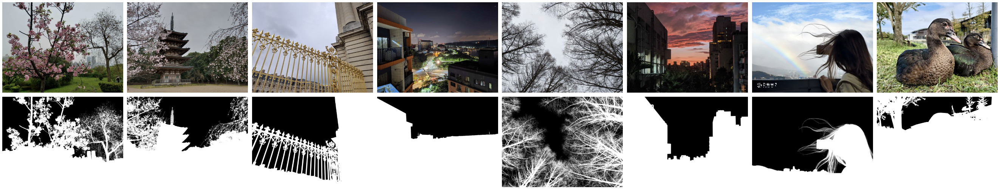

SkyMatte: a High-Quality Dataset for Improving Sky Image Matting

Abstract
This paper introduces SkyMatte, a high-quality dataset tailored for sky image matting. The dataset comprises high-resolution images featuring skies
under diverse lighting and weather conditions, along with a variety of foreground subjects. The sky mattes are accurate by leveraging a trimap-based
image matting model with meticulously annotated trimaps. Experimental results demonstrate that the proposed dataset significantly enhances the performance
of sky matting models compared to the existing sky matting dataset. Furthermore, we explore two modules for sky image matting: the coordinate convolution
layer and a trainable guided filter. The proposed model, trained on the SkyMatte dataset, achieves state-of-the-art performance in sky image matting.
The resulting model is useful for various sky-related applications, including sky replacement, sky denoising, and low-light enhancement.
License Agreement
This dataset is licensed under CC BY-NC-SA. This license permits others to distribute, remix, adapt, and build upon the material for non-commercial
purposes only, provided they give appropriate credit to the author. If you remix, adapt, or build upon the material, you must license the modified
material under identical terms.
Downloads